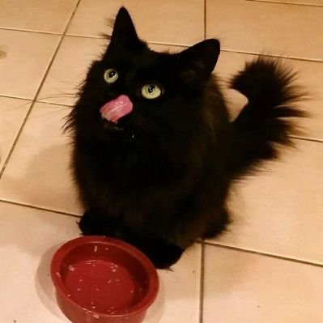

我真的不要上学了
@suzukii_ovo
RT @TarsMark2: 泡温泉还有小狗摸摸吗
When you in hot spring, puppy will come and play with you.
#犬调 #人形犬 #小狗日记 #k9 #bitchsuit #humanpet #ヒトイヌ
🐩 @18cm…

梓楚 Branka
@TarsMark2
泡温泉还有小狗摸摸吗
When you in hot spring, puppy will come and play with you.
#犬调 #人形犬 #小狗日记 #k9 #bitchsuit #humanpet #ヒトイヌ
🐩 @18cm_cucumber
📷 @TarsMark2
Bitchsuit & Harness @BlackMarieChina
Mask @LambStudio_ https://t.co/A3sPURSOmB